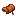

鞍
Saddle
minecraft:saddle原版物品
Minecraft 原版物品。它只出现在附属模组的配方里，没有 Create 本体配方引用它。
属于这些标签
不属于任何已收录的标签。
说明
这一页是为了让附属模组页面里的配方格能点进来而建的。它没有 Create 的机制或配方，只是原版的一种材料。

Minecraft 原版物品。它只出现在附属模组的配方里，没有 Create 本体配方引用它。
不属于任何已收录的标签。
这一页是为了让附属模组页面里的配方格能点进来而建的。它没有 Create 的机制或配方，只是原版的一种材料。